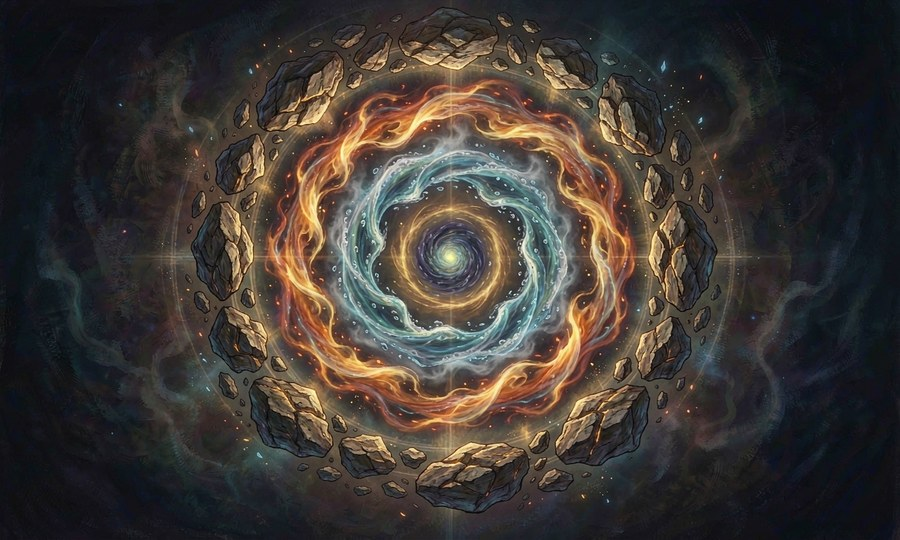

操控火、水、雷、土等自然元素、声波，以及物质的形态变化。
涓流
能够感应并引导水源，产生高压水流。阶级越高影响的水域越大，甚至能引发地脉异动。
维持引水后持续流动，直至枯竭或使用者切断引导。
进阶路径 · 7→0 阶
7阶获得从岩石缝隙引出泉水或射出水刃的能力。
6阶获得改变小溪流向的能力。
5阶获得从地下深处召唤涌泉的能力。
4阶获得在干旱季节引发降雨的能力。
3阶获得使一条河逆流的能力。
2阶获得从空气中提取水分并形成水柱的能力。
1阶获得操控潮汐的力量。
0阶获得呼风唤雨，令大地的脉络由自己主宰的能力。
雷鸣
召唤雷电之力，从掌心释放闪电打击目标，或在天空召唤雷暴覆盖一片区域。
维持闪电为一次性释放，雷暴可持续数秒。
进阶路径 · 7→0 阶
7阶获得指尖放电刺痛敌人的能力。
6阶获得从空中引来一道细电劈向目标的能力。
5阶获得释放一道粗大的闪电攻击单个目标的能力。
4阶获得在周身形成雷击防护层的能力。
3阶获得召来一阵雷阵雨的能力。
2阶获得在整片战场降下密集雷电的能力。
1阶获得使雷电附着武器上进行无差别斩击的能力。
0阶获得令天雷听命，撕裂苍穹的能力。
浮光
自身化身为强光源致盲敌人，或利用光线折射制造虚假的光影分身。
维持光效持续至灵力耗尽。
进阶路径 · 7→0 阶
7阶获得制造一只发光蝴蝶照亮黑暗的能力。
6阶获得迷惑双眼，让人分不清真实与光影的能力。
5阶获得以蜉蝣群组成光影幻象欺骗对方的能力。
4阶让蜉蝣群发出灼热气浪烫伤靠近者的能力。
3阶获得通过光芒投射虚幻形象干扰对方的能力。
2阶获得将光芒转化为丝线束缚敌人的能力。
1阶获得驱使数以万计的流光遮蔽视野的能力。
0阶获得化身纯粹的光明，贯穿虚实的终极形态。
猩红盛宴
将周围的血液吸引至手中形成血鞭或血刃攻击目标，或以血雾弥漫全场使人呼吸困难。
维持血雾消散较快，血刃需持续握持。
进阶路径 · 7→0 阶
7阶获得从伤口汲取少量血液形成细线的能力。
6阶获得凝聚空气中的微量血色形成短刃的能力。
5阶获得抽取敌人鲜血化作血鞭抽打的能力。
4阶获得在空中编织血色丝线干扰对手行动的能力。
3阶获得召唤血雾笼罩战场使敌方视线受阻的能力。
2阶获得将血液化为飞梭远距离攻击的能力。
1阶获得从地底吸取所有生物血液掀起血潮的能力。
0阶获得将一滴血化为一场猩红风暴的能力。
污迹
在目标表面留下无形的污秽印记，使其受到的治愈效果减半，装备临时失灵。
维持印记可留存数小时，经强烈净化方可消除。
进阶路径 · 7→0 阶
7阶获得沾染轻微污渍使其物品蒙尘的能力。
6阶获得使武器生锈减速的能力。
5阶获得使治疗效果减弱三分之一的能力。
4阶获得让污迹附着在多个目标上的能力。
3阶获得使污迹传染给近距离友军的能力。
2阶获得使污迹转化为黑色黏液束缚敌人的能力。
1阶获得使接触过的物体自动积累腐朽污迹的能力。
0阶获得使世间万物皆沾有不可祛除之垢的能力。
编织法
以魔力织出肉眼可见也摸得着的布匹绳索，可用于捆绑、防御、缝合伤口、制作简易工具。
维持编织物持续至断裂或主动解除。
进阶路径 · 7→0 阶
7阶获得编织出一条细绳的能力。
6阶获得织出一面小型盾牌的能力。
5阶获得缝补破损衣物或简单伤口的能力。
4阶获得织出一张网捕捉物体的能力。
3阶获得编制紧身衣提供轻度保护的能力。
2阶获得编织一张悬浮平台承载多人的能力。
1阶获得以无形丝线远程操控物体或提线木偶的能力。
0阶获得将现实本身视作布料随意裁剪缝缀的能力。
风炎
召唤一阵携带火星的微风拂过目标，可引发大火或带来清凉降温。
维持风止则效果消。
进阶路径 · 7→0 阶
7阶获得加热一杯水的能力。
6阶获得吹出一团小风把篝火扇旺的能力。
5阶获得使一缕火焰顺着风向蔓延数米的能力。
4阶获得在狂风中精准定位火源焚烧的能力。
3阶获得让风携火星穿透铁甲缝隙灼烧内部的能力。
2阶获得以暴风卷起漫天火雨覆盖战场的能力。
1阶获得操控气流使之无声无息地渗入任何角落并自燃的能力。
0阶获得转瞬之间燃尽千里的能力。
北国月相
利用月光凝结出冰晶箭矢或寒气护盾。力量源自皎洁的月色，阴天威力削弱。
维持冰晶命中后即碎裂，护盾持续至破裂。
进阶路径 · 7→0 阶
7阶获得用月光凝聚薄冰敷在伤口上止血的能力。
6阶获得射出一道冰锥的攻击能力。
5阶获得在身前凝结一层半月形冰盾的能力。
4阶获得发射三道冰矢进行齐射的能力。
3阶获得在月光下冻结小范围地面使敌人滑倒的能力。
2阶获得召唤一轮霜月照亮黑夜并使周围结霜的能力。
1阶获得在阴天也能借一丝月光释放寒冰之力的能力。
0阶获得令白昼亦如月夜般寒彻骨髓的能力。
星速
借着星辰之力大幅提升移动速度与反应速度，短时间内如同流星划过天际。
维持加速持续数秒至半分钟不等。
进阶路径 · 7→0 阶
7阶获得跑步时脚下泛起微光的感觉。
6阶获得在短时间内超越常人极限的速度。
5阶获得一边高速奔跑一边观察周围环境的能力。
4阶获得利用墙壁垂直奔驰而不坠落的能力。
3阶获得在高速移动中做出复杂变向的能力。
2阶获得同时加速多名同伴的能力。
1阶获得在星光照耀之处瞬间位移而不必奔跑的能力。
0阶获得化身为流星穿梭于天地之间的能力。
大地疮痍
震裂脚下的土地，制造沟壑、塌陷坑或尖刺岩柱阻挡或伤害敌人。
维持地质变化永久存在。
进阶路径 · 7→0 阶
7阶获得踏碎一块石板的地面冲击能力。
6阶获得在地面上划出一道裂缝的能力。
5阶获得召唤尖锐石块从土中刺穿而出袭击敌人的能力。
4阶获得使一小片地面崩塌形成凹坑的能力。
3阶获得将道路撕裂成难以跨越的鸿沟的能力。
2阶获得引发局部地震破坏建筑的的能力。
1阶获得重塑地形构造平原山谷的能力。
0阶获得使大地本身痛楚翻滚，方圆百里皆为疮痍的能力。
霜羽
背后凝聚冰晶羽翼，可在低温环境中自由翱翔。温度越低，飞行越快越灵活。
维持飞行期间持续消耗灵力，温度骤降时可暂停消耗。
进阶路径 · 7→0 阶
7阶获得在冰面上短暂滑行或长距离滑翔的能力。
6阶获得制造小型冰翼支撑跳跃。
5阶获得连续短距离滞空滑翔。
4阶获得借助寒风加速上升的能力。
3阶获得在空中冻结雨水形成临时浮台。
2阶获得使双翼化为利刃斩击敌人。
1阶获得引发冰风暴遮蔽天空并阻碍视线。
0阶获得化身风雪形态在空中自由穿梭。
咏叹调
专精于声波杀伤——吹奏乐器释放华丽的魔法声波，是纯粹的杀伐利刃，亦可穿透障碍直击目标。
维持演奏期间持续造成影响，停止后效果消失。
进阶路径 · 7→0 阶
7阶获得演奏简单音调、使听者感到不适的能力。
6阶获得演奏短促旋律、使一人产生刺痛感的能力。
5阶获得完整演奏一首咏叹调、使近距离目标受到伤害的能力。
4阶获得使咏叹调范围扩大的能力。
3阶获得在演奏中掺杂精神冲击的能力。
2阶获得使咏叹调穿透墙壁和障碍物的能力。
1阶获得同时伤害多人的能力。
0阶获得使无需乐器、仅以哼唱即可释放咏叹调的能力。
余烬挽歌
将目标的肉体与灵魂视为正在燃烧的纸。中招者不仅遭受灼烧，其生命力会如同风中残烛般不可逆转地流逝，最终化为焦黑的粉末。
维持视火势蔓延程度而定，高阶级可长期附着在特定目标身上。
进阶路径 · 7→0 阶
7阶获得指尖搓出极高温度的灰色火苗，烧毁纸张或衣物。
6阶获得点燃目标头发衣物等易燃部位，并使伤口停止流血。
5阶获得产生无温度的冷火，接触处物体直接风化崩解。
4阶获得汲取周围环境温度来维持自身火源的无限续航。
3阶获得释放携带痛苦记忆的灰烬风暴，吸入者产生绝望幻觉。
2阶获得焚烧目标的影子，致使其本体的行动失衡。
1阶获得直接焚烧目标的未来，使其接下来的运气极度糟糕。
0阶获得献唱终焉之歌、将一名目标彻底燃尽的能力——但需要一段较长的咏唱时间，期间无法中断或移动。